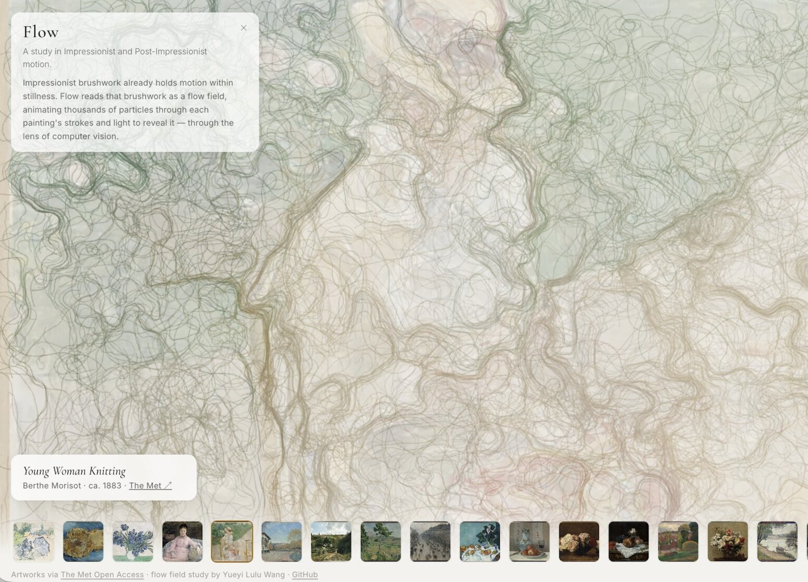
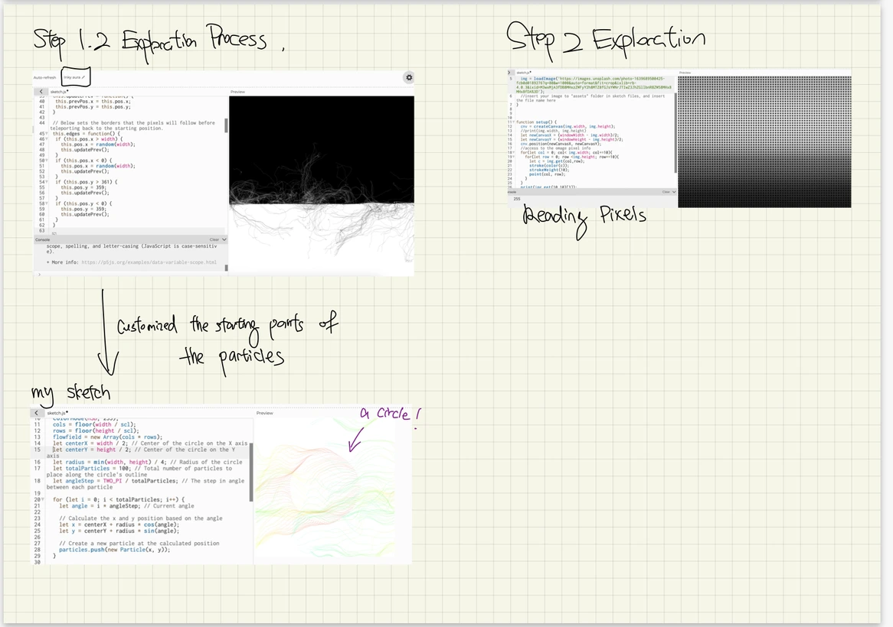
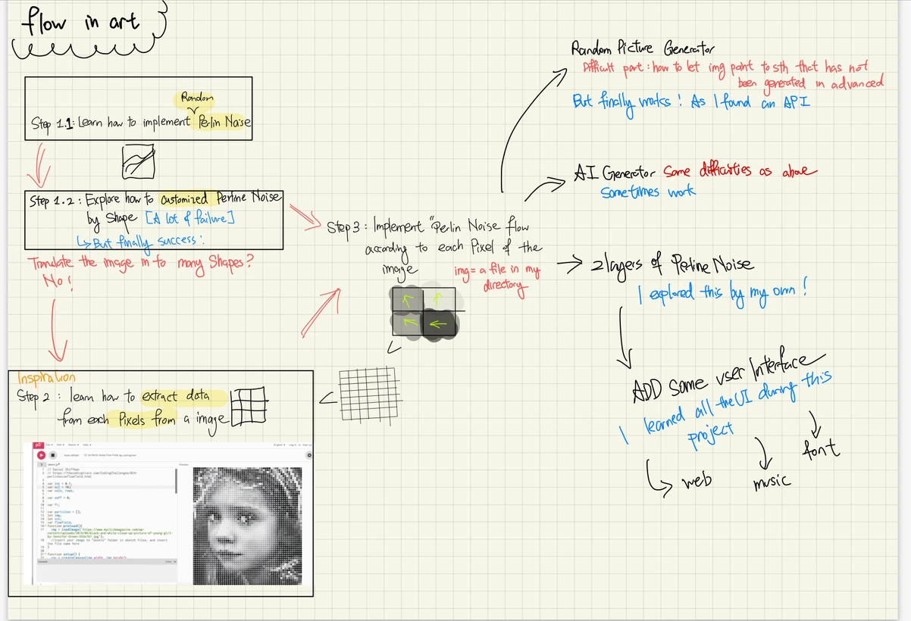

Flow
Overview
Flow is an interactive generative-art system that turns paintings into live particle fields, translating brushwork, color, and light into motion.
Built with JavaScript, p5.js, Canvas, and the Met Museum API, the browser-based experience lets visitors move between artworks and watch each painting generate its own particle behavior in real time.
My Role
I designed and built Flow end-to-end:
- Concept
- Visual research · computational interpretation · interaction direction
- Prototyping
- Processing · particle experiments · flow-field studies
- Design
- Figma · gallery interaction · visual hierarchy
- Engineering
- JavaScript · p5.js · Canvas 2D · Met Museum API
- Delivery
- Browser rebuild · performance tuning · live deployment
Project Context
Impressionist paintings already contain movement—even when nothing on the canvas is actually moving.
Short directional strokes can suggest wind, water, changing light, or the movement of a body. I became interested in whether I could read those visual qualities computationally, then use them to generate a new kind of movement.
Flow began as a Creative Coding class experiment in Processing. The first version asked a fairly simple question:
What happens if the visual information inside a painting becomes the rules of motion?
Instead of placing an animation on top of a painting, I wanted the painting itself to determine how the animation behaved.
That led me to experiment with visual properties and translate them into vectors that could guide thousands of particles across the canvas.
Final Artifact
The final version became an interactive browser-based gallery.
Visitors can switch between several paintings, and each artwork produces its own particle field in real time.
Painting as Data
The system samples the source artwork. Brightness, color, and direction influence the field used to move particles.
Flow-Field Particle System
Thousands of particles continuously respond to their position within the painting rather than follow one fixed animation.
Interactive Gallery
Visitors move between artworks, with each selection rebuilding the particle system around a different painting.
Artwork data is pulled through the Met Museum’s open Collection API, allowing the piece to work as a growing gallery rather than a single isolated visualization.
The painting stays still. The system makes the movement already suggested inside it visible.
Key Design Moments
Turning visual information into motion
The first challenge was deciding what information from a painting should actually control the particles.
Simply sampling pixels gave me data, but it didn’t automatically produce motion that felt connected to the artwork.
I experimented with different ways of translating brightness, color, and directional information into a vector field.


Some mappings produced movement that felt almost random. Others became too uniform and lost the complexity of the painting.
The goal wasn’t to reproduce the brushstrokes literally.
It was to find a computational rule that could preserve the painting’s sense of direction and energy.
This became the foundation of the piece: the image isn’t decoration behind the particles—it determines how the system moves.
Finding the point between painterly and chaotic
Once the flow field worked, another problem appeared.
More particles and more movement didn’t necessarily make the result better.
Small parameter changes could completely alter the feeling of the result. Too much movement became visual noise; too little made the system feel disconnected from the painting.
The challenge wasn’t making the system more complex. It was finding the point where the motion still felt painterly.
Instead of treating parameter tuning as only a technical optimization, I used it as part of the visual design process.
The final behavior had to be computationally generated, but still feel like it belonged to the artwork underneath it.
Connecting the gallery to the Met Museum API extended that idea further: artwork becomes an input to the system rather than content hard-coded into the piece.
Outcome
Flow grew from a Processing classroom experiment into a browser-based interactive generative-art system.
The final piece combines computational image analysis, live artwork data, and real-time particle rendering in one reusable system.
What began as a single generative sketch became a reusable system where each painting produces its own motion.
Reflection
Flow sits directly between two ways I like to work: making images and building systems.
I started with a painting question rather than a technical one. The code came later, as a way of investigating something I could already see in the artwork: direction, rhythm, repetition, and movement.
The most interesting part wasn’t using code to replace the painting. It was using code to notice something inside it differently.
It also changed how I think about generative systems.
The same algorithm does not need to produce the same aesthetic result every time. When the source material becomes part of the system, the behavior can stay consistent while the experience changes with every new input.